مملكة البحرين عرفت طوال تاريخها بأنها مقصد للعديد من محبي السياحة،
غير أن اكتشاف مستوطنات دلمون ومقابر تايلوس على مدى العقود الماضية،
قد اضاف سحراً خاصاً إليها بجانب ما بها من آثار دينية وحضارية فريدة،
إضافة إلى ما تتمتع به من موقع جغرافي ومنشئاتها الترفيهية وسواحلها الجميلة الممتدة،
وبحارها المليئة بكنوز اللؤلؤ الطبيعي النادر.
نسنعرض لكم أهم المعالم السياحية في مملكة البحرين.
1- جامع أحمد الفاتح الكبير
يعتبر جامع أحمد الفاتح الكبير من أهم معالم السياحة في البحرين، فهو واحد من أكبر المساجد في العالم،
موجودٌ في قرية الجفير في المنامة عاصمة البحرين وقد بناه الشيخ “عيسى بن سلمان آل خليفة”
أمير البحرين في عام 1987 م،
وأطلق عليه اسم مسجد أحمد الفاتح نسبة إلى القائد العربي أحمد الفاتح الذي فتح البحرين.
وقد بني المسجد ليتسع لحوالي 7000 مصلي،
وهو حاليا مركزٌ إسلاميٌ كبيرٌ يضم مكتبة تضم عدداً هائلاً من الكتب يزيد عن 7000 كتاب
، بعضها يعود لما يزيد عن مائة عامٍ مضت في موضوعاتٍ متعددةً مثل الفقه والحديث،
والعديد من الكتب الدينية وأعداد مجلة الأزهر والموسوعة العربية الإسلامي.
2- قلعة البحرين
قلعة البحرين الأثرية، وأحياناً يطلق عليها قلعة البرتغال، من معالم السياحة في البحرين والتي يعود تاريخ بناؤها للقرن 14 الميلادي، وقد أضيفت لها العديد من المباني على مراحل مختلفة، والقلعة موجودة في العاصمة المنامة، وتحديداً في شارع السيف، على شاطئ الخليج، ويقصدها السياح كأثرٍ تاريخيٍ ومعماريٍ هام، خصوصاً وهي مدرجةٌ على قوائم التراث العالمي للمنظمة الدولية اليونسكو.
تضم القلعة العديد من الآثار التاريخية التي تحكي عن تاريخ البحرين في الأزمنة المختلفة، إضافةً إلى حفرياتٍ ترجع إلى 2300 سنةً قبل الميلاد، تثبت وجود الإنسان في هذه المنطقة منذ بدأ الخليقة، ويحلو للزوار التقاط الصور التذكارية بجوار القلعة والقناطر القريبة.
3- باب البحرين
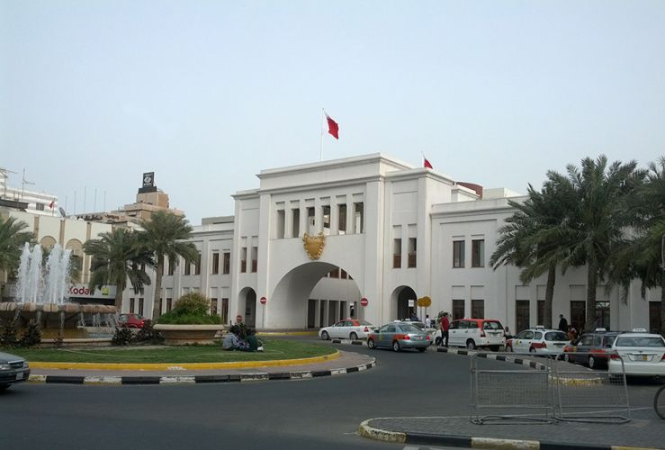
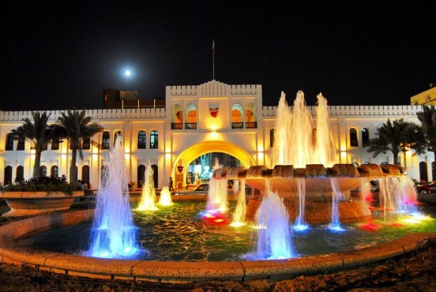
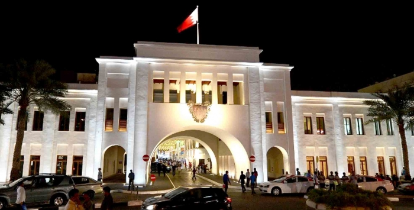
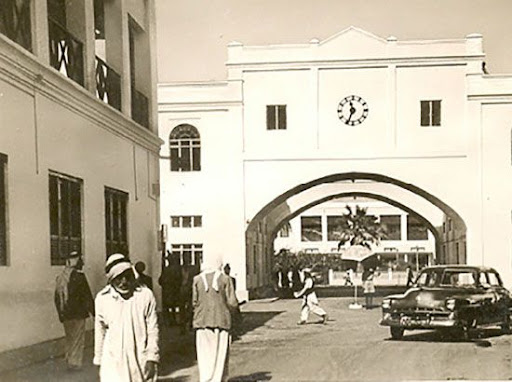
باب البحرين من أماكن السياحة في البحرين التي تجتذب الكثير من السياح والزائرين للمملكة، وهو عبارة عن بوابةٌ أثريةٌ قديمةٌ تم ترميمها عام 1945 على يد السير “تشارلز بلجريف” مستشار حكومة البحرين في ذلك الوقت، ثم أعيد تجديد بنائه في عام 1986، لتحمل كل تفاصيله الطابع الإسلامي الغني بالنقوش الدقيقة والآيات القرآنية بالخطوط العربية الرائعة.
أما موقع باب البحرين فهو في مدخل الحي التجاري المركزي، والموصل لسوق المنامة أهم أسواق البحرين، والمكان مناسبٌ تماماً لالتقاط الصور التذكارية بجوار هذا الصرح الأثري الهام، وهناك العديد من الفاعليات التي تقام عند باب البحرين مثل معرض المنتجات الشعبية، والتي تعرض العديد من المنتجات اليدوية مثل الملابس والسلال والأدوات المنزلية وأنواع الحلوى الشعبية التي تشتهر بها البلاد.
4- متحف البحرين الوطني
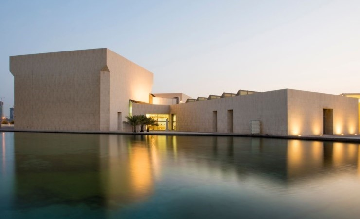
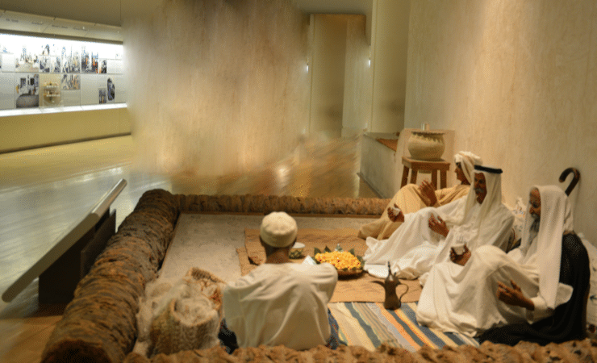
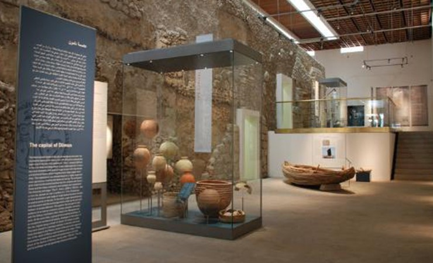
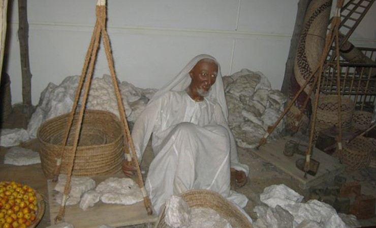
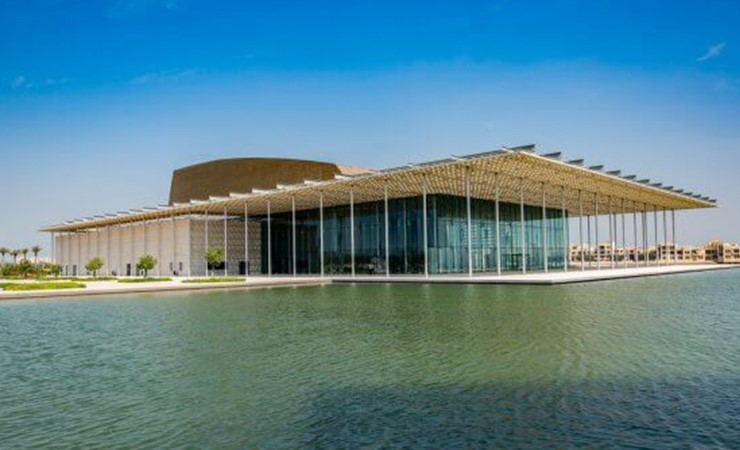
تعد زيارة متحف البحرين الوطني تجربة رائعة تساعدك على معرفة تاريخ البحرين بطريقة ممتعة. المبنى في حد ذاته بتصميمه المعماري الفريد وموقعه المتميز في قلب البحر يضيف إلى التجربة ويجعل المتحف يستحق الزيارة. تم بناء متحف البحرين الوطني عام 1988، على مساحة 27,800 متر مربع. ويضم المتحف 9 قاعات مصنفة تحت 6 أجزاء مختلفة تلخص تاريخ البحرين خلال 4000 عام. أكثر أجزاء المتحف شعبية بين الزوار هي تلك التي تضم بقايا حضارة الدلمون القديمة، ولكن الجزء الذي يمثل السوق الشعبي القديم ممتع ويستحق الزيارة كذلك. كما أن المتحف ليس مكان مخصص للماضي وحسب، إذ دائماً ما يقدم المسرح التابع له عروض حية. كما تقام العديد من المعارض التي تعرض الفن الحديث بشكل دوري.
5- منتزه ومحمية العرين
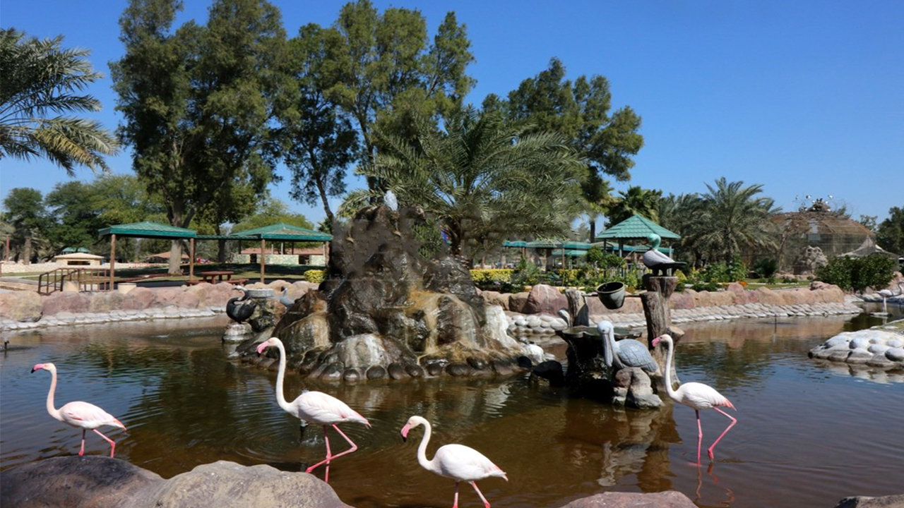
تضم محمية العرين أكثر من 80 نوع من الطيور، 25 نوع من النباتات، و45 نوع من الحيوانات، وكذلك العديد من قطعان المها العربي. ولذلك تعد واحدة من أفضل الأماكن الترفيهية في البحرين. تمتد المحمية وحديقة الحيوان التابعة لها على مساحة 10 كيلومتر مربع في منطقة الصخير، و تعد محمية العرين للحياة الطبيعية المحمية الوحيدة في البحرين التي تقع على اليابسة. تم بناء المحمية عام 1976، ولكنها قد مرت بالعديد من التجديدات منذ ذلك الوقت وآخر هذه التجديدات اضافة عش ضخم للطيور و مجمع للحيوانات البرية العربية.
6- منتزه عين عذاري
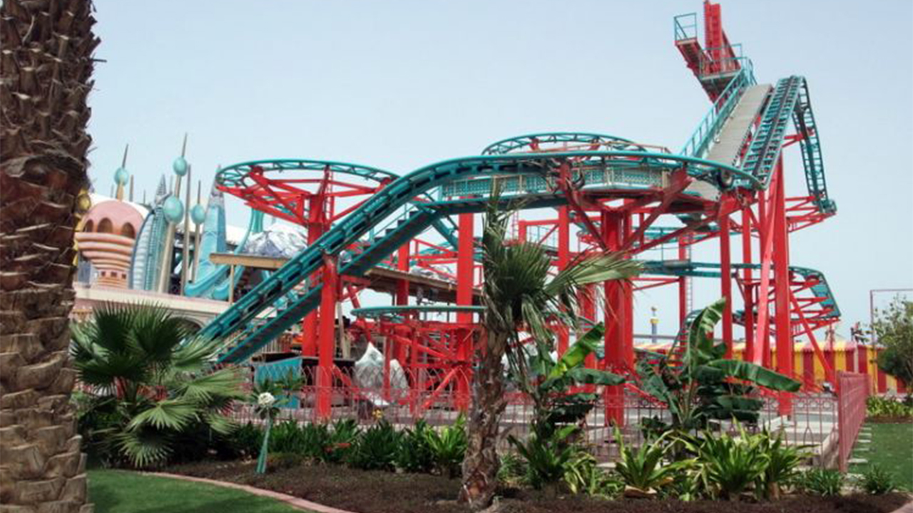
منتزه عذاري هي مدينة ملاهي في مملكة البحرين حول ينبوع المياه العذبة التاريخي المعروف باسم عين عذاري. التي تقع حول منطقة الزنج. في عام 2003، تم إعادة تصميم الموقع وأصبح نقطة جذب سياحية رئيسية. في عام 2006، أعيد تصميمه بتكلفة تزيد عن 23 مليون دولار أمريكي. في عام 2007، من المتوقع أن يستقبل المنتزه أكثر من مليون زائر.
7- جنة دلمون المفقودة
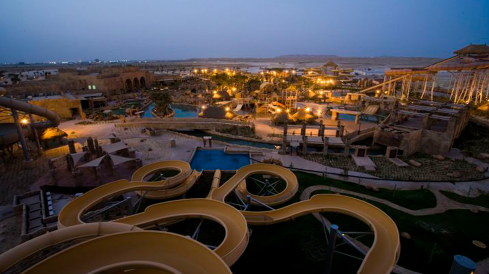
جنة دلمون المفقودة هي أكبر مدينة ملاهي مائية في البحرين، وتمتد على مساحة 77,000 متر مربع. وتعد المدينة مغامرة حية في حضارة الدلمون القديمة، جميع تفاصيل المباني والألعاب وحتى التماثيل التي تزين المدينة مستوحاة من تلك الحضارة. وتحتوي المدينة على عدة أقسام تضم ألعاب مائية مختلفة تناسب جميع الزوار، وتتراوح الألعاب المختلفة بين تلك التي تسمح لك بالاسترخاء في المياه وتلك التي توفر لك مغامرة مثيرة، كما تضم المدينة العديد من ألعاب الأطفال والشواطئ الرملية. وتعد واحدة من أفضل الأماكن الترفيهية العائلية في البحرين.
8- بيت القرآن
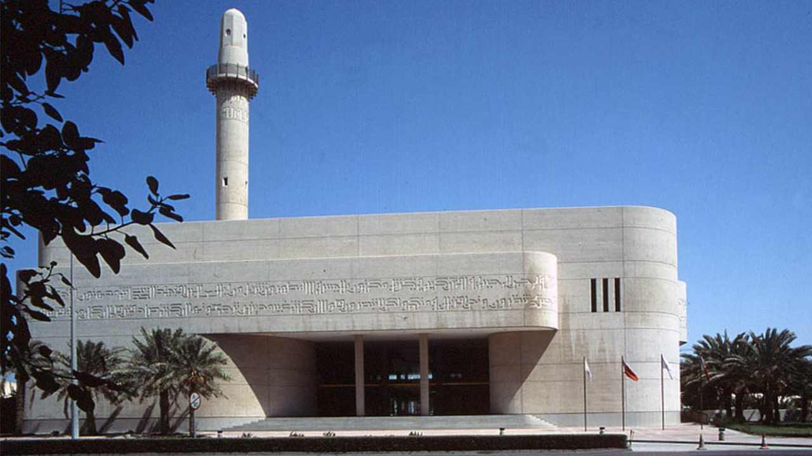
بيت القرآن يضم أفضل مجموعة من المصاحف القديمة في المنطقة. يعرض هذا المكان الرائع القرآن من كل قرن تقريبًا منذ ظهور الإسلام عام 610 ميلاديًا، بالإضافة إلى بعض أقدم الترجمات إلى اللغات الأوروبية. وعلاوة على المصاحف، يضم أيضًا مخطوطات ونقوش خشبية وأمثلة على الخط الإسلامي، ويضم مكتبة لأعمال الشعراء الفارسيين القدماء الرومي وعمر الخيام. هناك أيضًا نسخ مصغرة للمصحف، أصغرها (من بلاد فارس في القرن الثامن عشر) مقياسه 4.7 سم فقط في 3.2 سم.
9- جسر الملك فهد
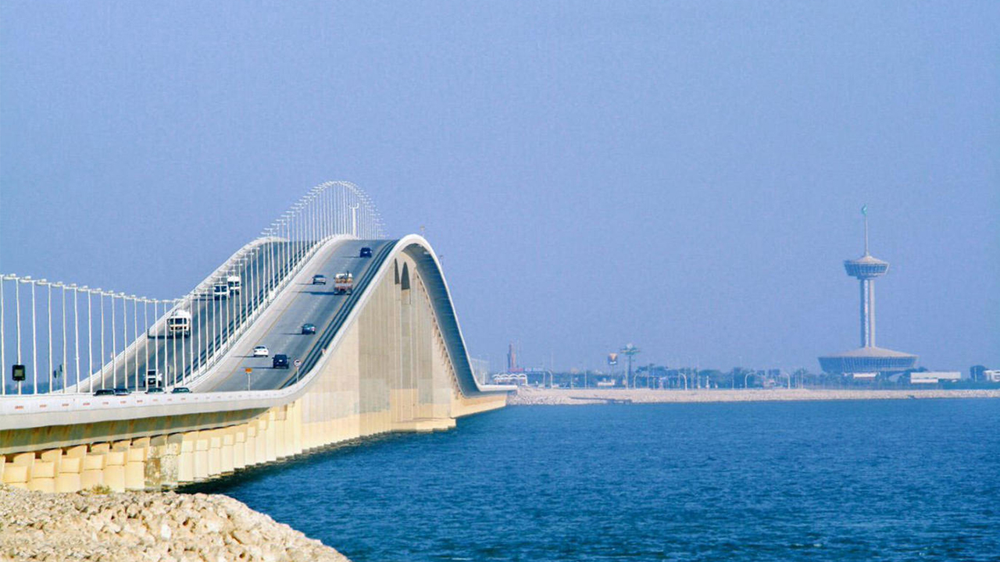
تم بناء جسر الملك فهد بين المملكة العربية السعودية ومملكة البحرين في عام 2006، وذلك من أجل توفير طريق بري يربط الدولتين، ويسهل انتقال المواطنين والوافدين بينهما، مما عمل على تنشيط التجارة والسياحة في البحرين، والسياحة في السعودية وزيادة عدد الزائرين من البلدين.
وعلى هامش الإنشاءات الخاصة بالجسر فقد تم إنشاء جزيرة صناعية في المنطقة الوسطى بين البلدين، تعتبر أحد أهم المقاصد السياحية، وقد تم تصميمها على شكل الساعة، وأقيمت بها العديد من المنشئات الترفيهية، وقد أقيم فيها برجين أحدهما ضمن الحدود السعودية، والآخر ضمن الحدود البحرينية، وبهذه الأبراج عدداً من المطاعم الفاخرة التي تزدحم بالرواد من كل الاتجاهات، حيث يشاهدون الكثير من المعالم في كلا الاتجاهين من أعلى البرج، وهناك العديد من الحدائق والمسطحات الخضراء التي يسمح للعابرين التنزه فيها.
10- جبل الدخان
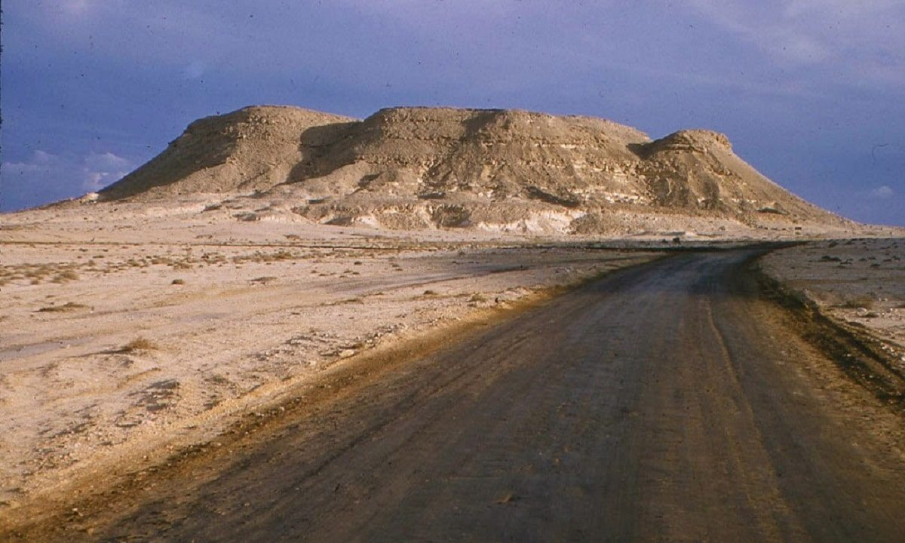
يُعتبر جبل الدخان أعلى نقطة في البحرين، ويقع في المحافظة الجنوبية في منطقة الصخير، حيث يبلغ ارتفاعه حوالي 134م فوق مستوى سطح البحر، وتكوّن هذا الجبل قديماً منذ ملايين السنين بفعل العوامل الجويّة والمائيّة التي مرّت بها البلاد آنذاك، فتكوّن جبل الدخان على شكل لوحة فنيّة تُزيّنها العديد من طبقات الصخور الرسوبية، وطبقات من الأحجار الجيريّة والرمليّة.